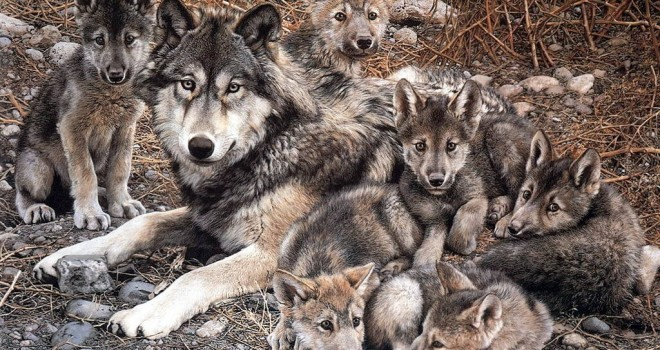
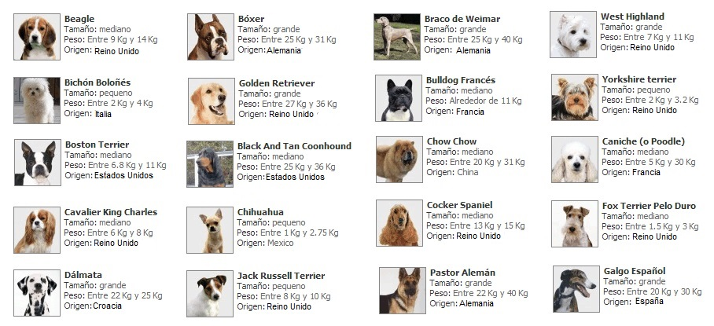
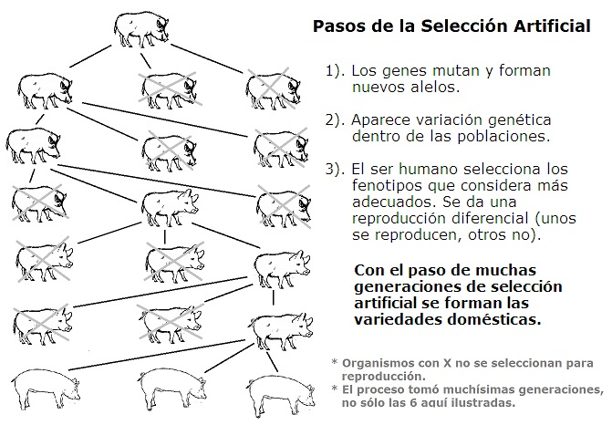

De los lobos a los perros rescatistas - Unidad 3
Al hablar de animales los más cercanos para la mayoría de personas son los perros. Estos organismos se han calificado como el “mejor amigo del hombre”. Aunque algunas veces las personas no se portan tan bien con sus mascotas como deberían.

Una historia reciente y sobresaliente es la de Turco, un perro labrador de España, que de ser una mascota abandonada pasó a ser un héroe de cuatro patas.
Un día sus compañeros humanos se cansaron de él, le quitaron el microchip (para su identificación) con una navaja bien afilada y lo abandonaron a su suerte.
Turco vagabundeó por las calles de Tarifa, España por mucho tiempo y en el verano de 2008 llegó a un campo de maniobras militares. El can fue rescatado y adoptado por Cristina Plaza Jorge, una soldado profesional, quien le brindó el amor que otros humanos le habían negado.
Un vecino de la soldado, que era bombero, observó un día que Turco olfateaba todo con gran curiosidad. Este bombero pidió permiso para hacerle pruebas a Turco en el centro de especialistas de rescate. Turco aprobó y ha participado en más de 18 rescates en diferentes lugares del mundo. Con su fino olfato Turco detecta a las víctimas que quedan atrapadas por los escombros tras los terremotos. En el terremoto de Haití de 2010 rescató a 18 personas.

Los padres de Turco, eran labradores retriever, los abuelos y bisabuelos también lo eran. Muy seguramente podríamos remontarnos mucho en el pasado de los labradores retriever hallando perros de la misma raza, pero no sería una secuencia infinita. En 1899 se registró el primer labrador amarillo. Este perro se llamó “Ben of Hyde”. Esto nos lleva a unas preguntas ¿Cómo se formaron las razas de perros? ¿Cómo se formaron los perros domésticos?
Quizás te extrañará saber que hubo hace diez mil años los humanos no tenían perros como mascotas. Y no tenían perros porque no existían. En aquellos tiempos los seres humanos estaban rodeados de lobos, hienas, osos y grandes felinos.
Tampoco en esos tiempos había zanahorias grandes, ni suculentas mazorcas o pan hecho de trigo. Los seres humanos cazaban y colectaban frutos de estación. Cuando un clan asaba la carne de caza solían llegar lobos grises atraídos por el olor de la carne.
En aquel entonces algunos lobos eran más curiosos que otros. Unos eran más agresivos que otros. Estas diferencias se deben a sus diferentes genes. Recordemos que los individuos en una población no son genéticamente idénticos (excepto los gemelos).
En algún momento, algunos lobos, lo suficientemente poco agresivos, aguardaban cerca a los humanos para comer las sobras de sus alimentos. En alguna ocasión una loba algo más dócil fue encontrada con sus cachorros, quizás cerca de una aldea humana, y sus pequeños encantaron a los humanos, como lo hacen todos los cachorros.
Poco a poco se fue estrechando la alianza entre humanos y lobos. Pero no todos los lobos eran mantenidos junto al hombre. Solo los ejemplares más dóciles y obedientes eran mantenidos. Muchos cachorros que se hacían agresivos eran sacrificados y solo se seleccionaban para reproducirse aquellos individuos que tenían las características deseables por los seres humanos.
Cuando los seres humanos seleccionaban los lobos que querían reproducir, estaban seleccionando indirectamente ciertos genes. Como sabemos los genes se relacionan con el fenotipo, o las características observables. Y nuevos tipos de genes, o alelos, aparecen por mutación.
En algún momento aparecieron nuevos alelos y combinaciones de genes que trajeron fenotipos que no existían antes en los lobos grises: orejas caídas, pelaje de color chocolate, pelo muy corto o ausencia de este; caras más largas, como en los galgos, o más cortas como en los bulldog; patas más largas como en los burzoi, o patas cortas, como en los perros salchicha. Estas características cuando aparecían por primera vez estaban presentes en un único organismo, pero el ser humano seleccionaba ese fenotipo y al permitir que se reprodujese el organismo con esas características hacía aumentar la proporción de esos alelos en las generaciones futuras.
El naturalista Charles Darwin notó que entre las poblaciones existe una gran diversidad, y que el hombre criaba en sus granjas a los organismos que aparecían con un rasgo que le pareciera deseable. Darwin en su época no sabía sobre el ADN, los genes o la mutación. Hoy en día se sabe que nuevos alelos (variantes de un gen) aparecen pro mutación. Estos nuevos alelos añaden diversidad genética a la población, y esta diversidad es la base sobre la que puede haber selección. En el caso de las variedades domesticas es el hombre quien selecciona. El ser humano elige que organismos dejan más descendencia, y de esta manera alelos que en un inicio eran poco comunes aumentan su presencia en la población. Este proceso en el que el hombre selecciona las variedades que se presentan dentro de una población se denomina “selección artificial”. Tras centenares o miles de generaciones de selección artificial por parte de los granjeros se han formado las diferentes variedades de plantas y animales domésticos.
La selección artificial fue el proceso que transformó a los feroces lobos grises en los amigables perros de hoy en día. Fue la selección cuidadosa de fenotipos, hecha por el hombre, lo que permitió que pudiese aparecer en el planeta perros rescatistas como Turco.
El ser humano no solo sometió a selección artificial a los animales, también lo hizo con muchas especies de plantas.
Hace más de diez mil años no existían mazorcas. No habría sido posible comer pop corn o arepas. Para comprender el origen del maíz hay que ir a México donde hay un grupo de especies de plantas denominadas “teosinte”. Lo curioso de estas plantas es el gran parecido que tienen con las plantas de maíz, especialmente en sus hojas. No obstante, hay diferencias importantes entre el maíz y el teosinte. En las plantas de maíz hay un tallo sin ramificaciones, con espigas masculinas en su punta y poblado de hojas en las que en sus yemas axilares parten las mazorcas. En cambio, las plantas de teosinte tienen un tallo del que parten ramificaciones laterales (y cada ramificación lateral posee en su punta una espiga masculina y en sus yemas axilares hay hojas con diminutas espigas femeninas). Las “mazorcas” del teosinte son de seis a doce granos cubiertos por una dura corteza. Si alguien hace más de 10.000 años quería alimentarse de los granos de teosinte tendría que hacer un gran esfuerzo.
Pero así como hay diversidad genética entre los organismos de una población de lobos, también la hubo entre la población de teosinte. Un día apareció una variedad que pasó a un solo tallo principal sin ramificaciones, otro cambió genético trajo un grano libre de la cáscara dura y otros más invirtieron el sexo de la espiga que corona a la planta de femenina a masculina. Nuevas variaciones genéticas generaron una gama de granos y mazorcas de diferentes tamaños y el hombre seleccionaba los más grandes.

El genetista John Doebly descubrió, en la primera década del siglo XXI, que un grupo de genes cercanos, denominados ba1 regulan el desarrollo de yemas laterales en la planta. Doebly y sus colegas encontraron que los mutantes de este gen ven disminuido el desarrollo de las ramificaciones laterales por una parte, mientras que por otra, presentan un gran crecimiento vertical. Otros grupos de genes relacionados con el cambio del teosinte en plantas de maíz también han sido identificados.
Los primeros cultivadores no sabían que genes. Ellos tan sólo conservaban los granos de las mejores plantas para ser sembradas. Así pues la cadena de mutación, diversidad, selección y reproducción diferencial, llevó de mazorcas de pocos granos duros a las grandes mazorcas del presente.
Procesos similares de selección de un mayor tamaño en el grano o en la fruta se realizaron para formar los cereales y frutas modernos. También en el caso de tubérculos y verduras se realizó un proceso de selección artificial.

Hay que notar que el proceso de mutación, que crea nuevos alelos; y el de reproducción son aleatorios o al azar. Pero la selección no tiene nada de azaroso. El hombre, en el caso de la selección artificial, elige que organismos dejarán más descendencia. Así que no importa si una característica novedosa aparece en un solo organismo, si esta genera una ventaja para el criador será preservada y su reproducción garantizada.
También es importante resaltar que muchas características que el hombre seleccionó no son favorables para los organismos en un ambiente natural. Por ejemplo, el humano seleccionó espigas de cereales en las que el grano permanece en la espiga y no cae. Esto favoreció la recolección del grano por parte de los humanos, pero sería perjudicial para la difusión de semillas en la vida silvestre. Las variedades de ovejas con patas muy cortas evitan que estas se escapen saltando la cerca, pero en la vida silvestre serían una desventaja para huir de los lobos.
El naturalista Charles Darwin observó que el cambio que llevaba de variedades silvestres a variedades domésticas indicaba claramente que las especies no eran entidades fijas e inmutables, sino que reflejan que estas pueden cambiar. En su obra “El Origen de las especies” Darwin comentó:
“Si, por ejemplo, pudiese demostrarse que que el galgo, el bloodhound, el terrier, el spaniel y el bull-dog, que todos sabemos que propagan su raza pura, era la descendencia de una sola especie cualquiera, entonces estos hechos tendrían gran peso para hacernos dudar de la inmutabilidad de muchas especies naturales”.
Sin duda hoy sabemos que la estructura genética de las poblaciones cambia con el paso de muchas generaciones, a esto se le llama evolución biológica. Pero, en tiempos de Darwin se creía que las especies eran entidades fijas que permanecían invariables con el tiempo.
Más adelante Darwin se preguntó en su obra que podría hacer la naturaleza seleccionando variedades genéticas en poblaciones naturales a lo largo de muchísimo tiempo.
“Si el hombre puede producir, y seguramente ha producido, grandes resultados con sus medios metódicos e inconscientes de selección ¿qué no podrá efectuar la selección natural?”
Esta pregunta será abordada en la próxima unidad.

Bibliografía
Campbell, N (1990). Biology. Second edition, Benjamin/Cummings.
Cnidus (2009). El Huerto Evolutivo (4): Del teocinte / teosinte al maíz. La evolución es la repanocha. Recuperado de: http://lacienciaysusdemonios.com/2009/10/06/el-huerto-evolutivo-4-del-teocinte-teosinte-al-maiz-la-evolucion-es-la-repanocha/
Curtis, H., Barnes, S. (1989). Biology, Fifth edition, Worth Publishers.
Darwin, C. (1859). El origen de las Especies, Madrid, Ediciones EDAF.
Hickman, C., Roberts, L, y Parson A. (1998). Principios integrales de zoología. Décima edición. Buenos Aires. McGraw-Hill-Interamericana.
Sadava, D. et al (2009). Vida. La ciencia de Biología. Buenos Aires, Argentina, Editorial Médica Panamericana.
20Minutos (2010). Turco, un perro abandonado y maltratado, salva 18 vidas en Haití. Recuperado de http://blogs.20minutos.es/animalesenadopcion/2010/02/09/turco-perro-abandonado-salva-18-personas-haitaa/
Crédito de imágenes
Imagen 1 y 2 tomada de: Reportaje Héroes de cuatro patas. CanalNebrija. http://www.youtube.com/watch?v=8n3tDxqiH8I
Imagen 3: http://www.veoverde.com/2013/03/los-esfuerzos-por-la-repoblacion-del-lobo-gris-mexicano-en-arizona/
Imagen 4: http://almaycorazoncanino.blogspot.com/2014/08/algunas-de-las-razas-mas-comunes.html
Imagen 7: https://elefectorayleigh.wordpress.com/2012/08/02/lo-natural/
Comentarios
Comments powered by Disqus